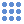

Crea un nuevo proyecto vacio. En caso de que exista un proyecto abierto se cierra.
Método abreviado de teclado: Ctrl+N
Desde el menú Flujo de trabajo -> Añadir imágenes se cargan las imágenes que se quieren procesar.
Al cargar las imagenes se activa el siguiente elemento del menú Flujo de trabajo.
Desde el ménu Flujo de trabajo se accede a la herramienta de Detección de puntos de interés. Esta es la primera herramienta del flujo de trabajo para obtener las orientaciones de las imágenes y la autocalibración de la cámara.
El método usado es SIFT (Scale-invariant feature transform) tanta para la extracción de características como para la generación de los descriptores de los puntos.
Al ejecutar la herramienta (botón Ejecutar) se desactivan todos los parámetros y se muestra una barra de proceso hasta que finalice la detección. Durante la ejecución del proceso se puede pausar o finalizar el mismo mediante los botones correspondientes.
Una vez finalizado el proceso en la barra de herramientas Visualización de imágenes se activa el icono  que permite visualizar sobre las imagenes los puntos de interés. Pulsando con el botón derecho del ratón sobre la imagen se despliega un menú desde el cual también se puede activar/desactivar la visualización de los puntos:

Cuando termina el proceso de matching se añaden al árbol de proyecto, como nodos hijos de las imágenes, los pares encontrados. Desplegando una imagen se muestran las imágenes con correspondencias. Al pulsar sobre esta imagen se muestra el gráfico de puntos de matching. También se pueden ver mas en detalle con la herramienta de visualización de puntos de matching
.Orientación relativa de las imágenes y autocalibración de la cámara.
Al final de este proceso se muestra un modelo ligero del objeto a reconstruir con la posición de las cámaras.